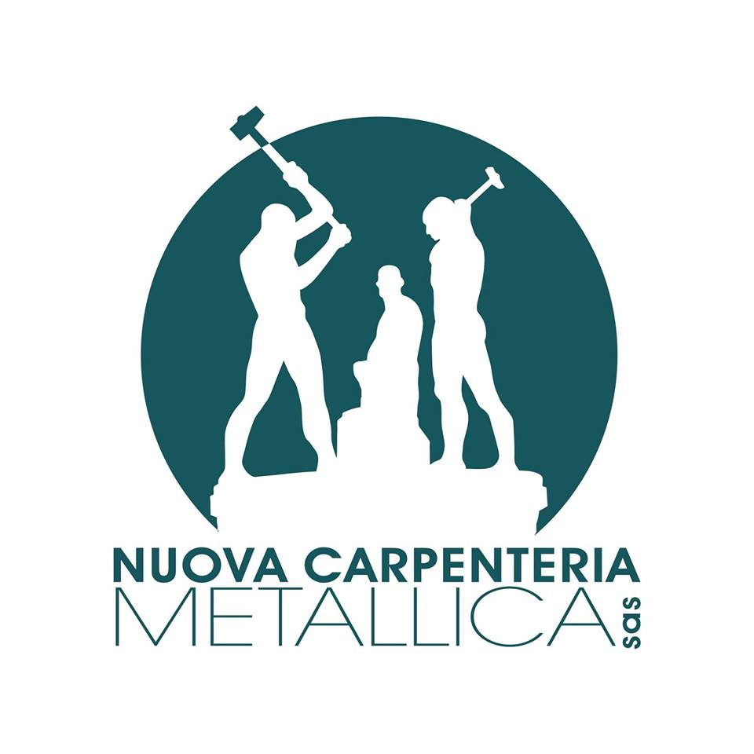

Noi di Nuova Carpenteria Metallica siamo attivi sul territorio di Parma dal 1970. Ci occupiamo di tapparelle, serrande, automazioni, manutenzione per condomini, chiudi cancelli, chiudi porte, cancelli, inferriate, tettoie, pensiline, corrimano ed elementi d’arredo anche su misura.
Non promettiamo tempi impossibili.
Promettiamo serietà, esperienza e lavori fatti bene.

Interventi pensati per condomini, parti comuni e amministrazioni: manutenzioni periodiche, gestione accessi e ripristino chiusure.
Soluzioni per case, appartamenti, cortili e ingressi: sicurezza, accessi, strutture in ferro e lavorazioni su misura.
Una pagina dedicata per ogni categoria di lavorazione.
Nuova Carpenteria Metallica è un punto di riferimento a Parma dal 1970 per lavorazioni in ferro, tapparelle, serrande e sistemi di chiusura. Operiamo a Parma, Fidenza, Collecchio, Langhirano, Noceto, Sala Baganza, Traversetolo, Sorbolo, Colorno, Torrile, Fontevivo, Fontanellato, Medesano e zone limitrofe.
Ci occupiamo di carpenteria metallica a Parma, serrande a Parma, tapparelle a Parma, automazione cancelli, chiudi porte e chiudi cancelli, manutenzione condomini, portoni sezionali, inferriate, cancellate, tettoie e pensiline. Interventi su misura per privati, aziende e amministratori condominiali.
Domande specifiche sui servizi più richiesti.
Sì, interveniamo su tapparelle manuali ed elettriche, compresa la sostituzione di componenti, la motorizzazione e l’automazione di tapparelle esistenti.
Sì, lavoriamo su serrande civili e commerciali, comprese automazioni, motori, componenti e sistemi di apertura.
Sì, installiamo, regoliamo e sostituiamo chiudi porte e chiudi cancelli, anche su accessi condominiali e porte comuni. Interveniamo anche su marchi diffusi come Dorma, Geze, Cisa e sistemi equivalenti.
Sì, seguiamo manutenzione di porte, serrature, chiudiporte, chiudicancelli, accessi comuni, tapparelle, serrande e strutture metalliche condominiali.
Sì, realizziamo e sistemiamo tettoie, pensiline, corrimano e altre strutture comuni in ferro, oltre a elementi d’arredo anche su misura.
Sì, eseguiamo estrazione chiavi rotte in giornata, con verifica della serratura e dell’eventuale ripristino del corretto funzionamento.
Sì, interveniamo su cancelli, cancellate e sistemi di automazione per cancelli, compresi accessori, regolazioni e componenti di chiusura.
Telefono officina
0521 272508Cellulare
+39 348 3935822Inviaci una foto e una breve descrizione del lavoro o della manutenzione richiesta.